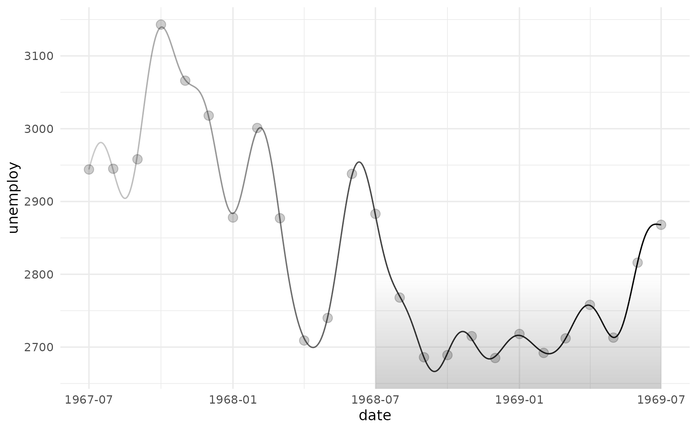

geom_rect_fade() draws axis-aligned rectangles and fills each one with a
linear gradient that fades one edge to transparent. The direction is
controlled by fade_direction. Corners can be rounded via the radius
argument, enabling rounded rectangles and smooth-cornered visual elements.
The default of 0 pt produces plain rectangles.
Usage
geom_rect_fade(
mapping = NULL,
data = NULL,
stat = "identity",
position = "identity",
...,
alpha_fade_to = 0,
fade_direction = "vertical",
radius = grid::unit(0, "pt"),
lineend = "butt",
linejoin = "mitre",
na.rm = FALSE,
show.legend = NA,
inherit.aes = TRUE
)Arguments
- mapping
Set of aesthetic mappings created by
aes(). If specified andinherit.aes = TRUE(the default), it is combined with the default mapping at the top level of the plot. You must supplymappingif there is no plot mapping.- data
The data to be displayed in this layer. There are three options:
If
NULL, the default, the data is inherited from the plot data as specified in the call toggplot().A
data.frame, or other object, will override the plot data. All objects will be fortified to produce a data frame. Seefortify()for which variables will be created.A
functionwill be called with a single argument, the plot data. The return value must be adata.frame, and will be used as the layer data. Afunctioncan be created from aformula(e.g.~ head(.x, 10)).- stat
Use to override the default connection between
geom_rect_fade()andstat_identity().- position
A position adjustment to use on the data for this layer. This can be used in various ways, including to prevent overplotting and improving the display. The
positionargument accepts the following:The result of calling a position function, such as
position_jitter(). This method allows for passing extra arguments to the position.A string naming the position adjustment. To give the position as a string, strip the function name of the
position_prefix. For example, to useposition_jitter(), give the position as"jitter".For more information and other ways to specify the position, see the layer position documentation.
- ...
Other arguments passed on to
layer()'sparamsargument. These arguments broadly fall into one of 4 categories below. Notably, further arguments to thepositionargument, or aesthetics that are required can not be passed through.... Unknown arguments that are not part of the 4 categories below are ignored.Static aesthetics that are not mapped to a scale, but are at a fixed value and apply to the layer as a whole. For example,
colour = "red"orlinewidth = 3. The geom's documentation has an Aesthetics section that lists the available options. The 'required' aesthetics cannot be passed on to theparams. Please note that while passing unmapped aesthetics as vectors is technically possible, the order and required length is not guaranteed to be parallel to the input data.When constructing a layer using a
stat_*()function, the...argument can be used to pass on parameters to thegeompart of the layer. An example of this isstat_density(geom = "area", outline.type = "both"). The geom's documentation lists which parameters it can accept.Inversely, when constructing a layer using a
geom_*()function, the...argument can be used to pass on parameters to thestatpart of the layer. An example of this isgeom_area(stat = "density", adjust = 0.5). The stat's documentation lists which parameters it can accept.The
key_glyphargument oflayer()may also be passed on through.... This can be one of the functions described as key glyphs, to change the display of the layer in the legend.
- alpha_fade_to
A single finite number between 0 and 1. The alpha value at the fading edge of each rectangle. Defaults to
0(fully transparent).- fade_direction
Direction of the alpha gradient. One of:
"vertical"(default) Top edge is opaque (
ymax), bottom edge fades toalpha_fade_to(ymin)."horizontal"Left edge is opaque (
xmin), right edge fades toalpha_fade_to(xmax).
- radius
Corner radius passed to
grid::roundrectGrob(). Agrid::unit()object (e.g.unit(4, "pt")); a bare number is interpreted as points. Defaults tounit(0, "pt")(sharp corners).- lineend
Line end style (round, butt, square).
- linejoin
Line join style (round, mitre, bevel).
- na.rm
If
FALSE, the default, missing values are removed with a warning. IfTRUE, missing values are silently removed.- show.legend
logical. Should this layer be included in the legends?
NA, the default, includes if any aesthetics are mapped.FALSEnever includes, andTRUEalways includes. It can also be a named logical vector to finely select the aesthetics to display. To include legend keys for all levels, even when no data exists, useTRUE. IfNA, all levels are shown in legend, but unobserved levels are omitted.- inherit.aes
If
FALSE, overrides the default aesthetics, rather than combining with them. This is most useful for helper functions that define both data and aesthetics and shouldn't inherit behaviour from the default plot specification, e.g.annotation_borders().
Value
A ggplot2::layer() object that can be added to a ggplot2::ggplot().
Polar coordinates
Under ggplot2::coord_polar() / ggplot2::coord_radial() each rectangle is
bent into an annular segment. A radial alpha gradient – transparent at the
inner radius, opaque at the outer – is rendered when the fade direction
aligns with the radial axis:
theta = "x"(default) +fade_direction = "vertical":ymin/ymaxmap to inner/outer radius and fade radially.theta = "y"+fade_direction = "horizontal":xmin/xmaxmap to inner/outer radius and fade radially.
Any other combination (for example theta = "x" with
fade_direction = "horizontal") would require an angular / conic gradient,
which grid does not yet expose. Such plots fall back to plain
ggplot2::geom_rect() rendering and emit a one-time warning.
Rounded corners (radius) are ignored in polar coordinates since arcs do
not carry corner geometry.
Legend key under coord_flip
The legend key glyph always shows the canonical (data-axis) fade
direction – vertical for the default orientation, horizontal under
orientation = "y". Under ggplot2::coord_flip() the rendered geom
rotates correctly but the legend key does not: ggplot2's legend
builder is coord-independent by design (draw_key has no access to
the coord). For a legend key that matches a horizontal layout, prefer
aes(y = ...) with auto-detected orientation = "y" over
aes(x = ...) + coord_flip().
References
Murrell, P. (2022). "Vectorised Pattern Fills in R Graphics." Technical Report 2022-01, Department of Statistics, The University of Auckland. Version 1. https://www.stat.auckland.ac.nz/~paul/Reports/GraphicsEngine/vecpat/vecpat.html
See also
ggplot2::geom_rect() for plain rectangles,
geom_col_fade() for bar charts with per-bar gradient scaling and
orientation support.
Aesthetics
geom_rect_fade() understands the following aesthetics. Required aesthetics are displayed in bold and defaults are displayed for optional aesthetics:
| • | x or width or xmin or xmax | |
| • | y or height or ymin or ymax | |
| • | alpha | → NA |
| • | colour | → via theme() |
| • | fill | → via theme() |
| • | group | → inferred |
| • | linetype | → via theme() |
| • | linewidth | → via theme() |
Learn more about setting these aesthetics in vignette("ggplot2-specs").
Examples
library(ggplot2)
# With geom_rect_fade() you can draw arbitrary rectangles
ggplot(head(economics, 25), aes(date, unemploy)) +
geom_rect_fade(
data = data.frame(
xmin = as.Date("1968-07-01"),
xmax = as.Date("1969-07-01"),
ymin = -Inf, ymax = 2800
),
inherit.aes = FALSE,
alpha = 0,
alpha_fade_to = 0.3,
aes(xmin = xmin, xmax = xmax, ymin = ymin, ymax = ymax)
) +
stat_fourier(geom = "line_fade", fade_direction = "start", alpha_fade_to = 0.2) +
geom_point(size = 3, alpha = 0.2) +
theme_minimal()
